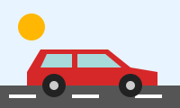

Legacy IE syntax: filter: progid:DXImageTransform.Microsoft.MotionBlur(direction=90, strength=10).
Below, the same effect is produced with modern CSS + SVG filters.

Original (no filter)
Direction 90 (horizontal), strength 3
Direction 90 (horizontal), strength 8
Direction 90 (horizontal), strength 15
Direction 0/180 (vertical), strength 3
Direction 0/180 (vertical), strength 10
Direction 45 (diagonal up-right)
Direction 135 (diagonal down-right)
Uniform filter: blur(3px) (no direction)
stdDeviation="10 0"